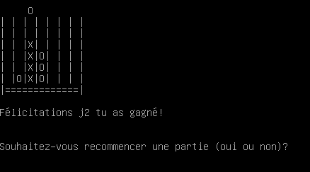
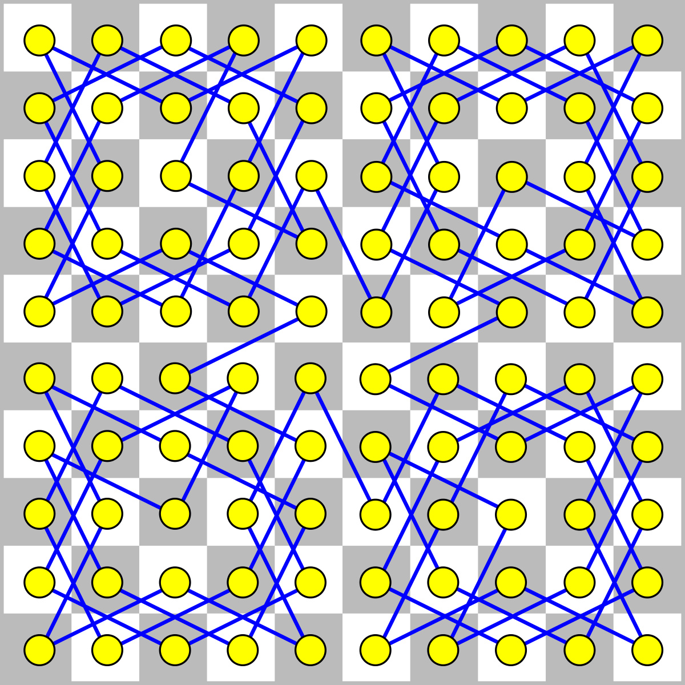
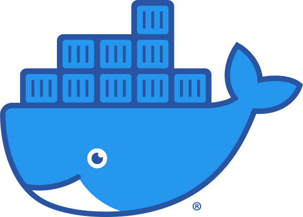
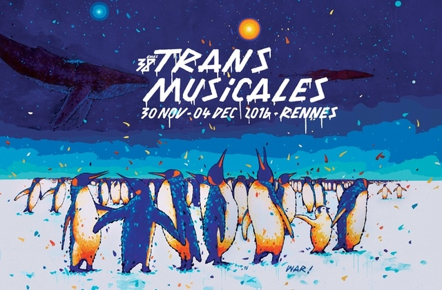
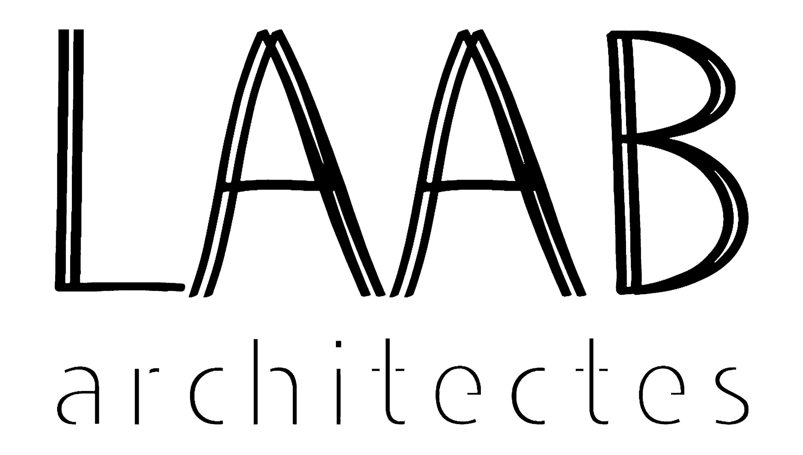

Compétence 1
Développer des applications informatiques simples
Puissance4
Création d'un jeu de puissance 4 en C dans le terminal, qui se joue à 2 joueurs.
Compétence 1
Développer des applications informatiques simples
Etude de marché
Création d'une étude de marché en php et MySQL.
Compétence 2
Appréhender et construire des algorithmes
Tour du cavalier
Création d'un programme python de backtracking afin de résoudre le problème du tour du cavalier et développement de l'interface graphique.
Compétence 3
Installer et configurer un poste de travail
Docker
Découverte de docker et du principe d'automatisation des systèmes
Compétence 3
Installer et configurer un poste de travail
Serveur Web
Installation et configuration d'un serveur web avec Apache, PHP et MySQL.
Compétence 4
Concevoir et mettre en place une base de données à partir d'un cahier des charges client
Les Transmusicales
Création d'une base de données PostgreSQL à partir d'un diagramme de classe UML.
Compétence 4
Concevoir et mettre en place une base de données à partir d'un cahier des charges client
Parcoursup
Création, exploitation et étude d'une base de données PostgreSQL à partir d'un diagramme de classe UML.
Compétence 5
Identifier les besoins métiers des clients et des utilisateurs
Sport KOH
Création d'un site vitrine pour l'association sportive Sport KOH.
Compétence 5
Identifier les besoins métiers des clients et des utilisateurs
L'Hotel du Cheval Blanc
Création d'une application Java répondant à un besoin des propriétaires de l'hôtel. Cette application est connecter à une API et une base de données et dispose d'une IHM Java FX.
Compétence 6
Identifier ses aptitudes pour travailler dans une équipe
Team Building
Organisation d'un événement de team building pour l'entreprise Lannionaise Faucquert Architecte.